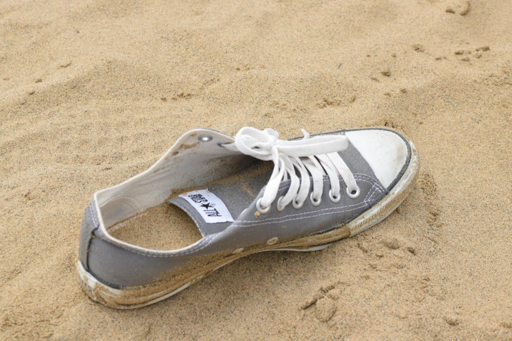
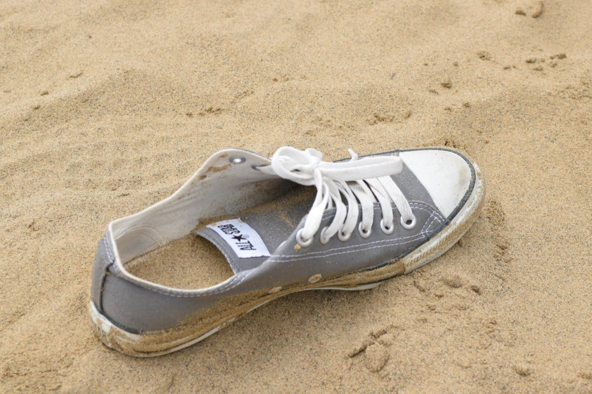

会社概要
| 見出し | ここに説明など入れて下さい。サンプルテキスト。 |
|---|---|
| 見出し | ここに説明など入れて下さい。サンプルテキスト。 |
| 見出し | ここに説明など入れて下さい。サンプルテキスト。 |
| 見出し | ここに説明など入れて下さい。サンプルテキスト。 |
| 見出し | ここに説明など入れて下さい。サンプルテキスト。 |
当テンプレートの使い方
titleタグの設定はとても重要です。念入りにワードを選んで適切に入力しましょう。
まず、htmlソースが見れる状態にして、
<title>ファッションブランド・衣料メーカー・服屋・古着屋・アパレルショップ向け 無料ホームページテンプレート tp_fashion1</title>
を編集しましょう。
あなたのホームページ名が「SAMPLE COMPANY」だとすれば、
<title>SAMPLE COMPANY</title>
とすればＯＫです。SEO対策もするなら冒頭に重要なワードを入れておきましょう。
copyrightを変更しましょう。
続いてhtmlの下の方にある、
Copyright© SAMPLE COMPANY All Rights Reserved.
の部分もあなたのサイト名に変更します。
metaタグを変更しましょう。
htmlソースが見える状態にしてmetaタグを変更しましょう。
ソースの上の方に、
content="ここにサイト説明を入れます"
という部分がありますので、テキストをサイトの説明文に入れ替えます。検索結果の文面に使われる場合もありますので、見た人が来訪したくなるような説明文を簡潔に書きましょう。
h1ロゴのaltタグも変更しましょう
html側に、
alt="BLAND LOGO"
となっている箇所があるので、この部分もあなたのサイト名に変更しましょう。
テンプレートの色変更について
全体のカラー変更は簡単にできます。
cssフォルダのstyle.cssを開き、冒頭の、
:root {
の中にある、
--primary-color:
〜〜〜
他数行の設定を変更すればサイト全体の色変更ができます。
※必要に応じてテーブルやカラムブロック内の調整が必要になる場合もあります。
アイコン画像について（Font Awesomeの解説）
imagesフォルダに入っていない画像（アイコン）は全てFont Awesomeの素材です。
Font Awesome 公式サイト
Font Awesome アイコン一覧
iタグを使ってhtmlに直接アイコンを読み込む場合と、cssの擬似要素を使って読み込む場合があります。
それぞれ他のアイコンに置き換えたい場合は、当サイトのマニュアルをお読み下さい。
Font Awesomeを使う為に必要なタグ、ファイル類。
cssフォルダのstyle.css冒頭で読み込んでいる「Font Awesomeの読み込み」のブロック。
何年も経過した場合、動作に問題が出てくる可能性があります。
テンプレートを編集していないのに突然動きがおかしくなった場合は、style.cssの冒頭でCDNから読み込んでいるFont Awesome関連のファイルのバージョンを変更して動作するか確認してみて下さい。
上部メニューについて
画面幅が600px以下で、メインメニューが開閉ブロックタイプになります。
この数値を変更したい場合は、jsフォルダのmain.jsの、
if(window.innerWidth <= 600)
の、600の数値を変更して下さい。
※当テンプレートのメニュー関連のコードは2024年4月最新版を使っています。
基本的な動作チェックは行いましたが、様々な動作チェックをされた場合に不具合が発生する可能性があるので、発見された際はお手数ですがサポート掲示板からご連絡下さい。
動作確認の際にあまりに素早い動作をされるとスクリプトが追いつかない場合があります。特にweb業者様など慣れている環境でテストされる際は、あくまで通常ユーザーの速度で試して下さい。
上部メニューのドロップダウンメニューについて
「BLAND」メニューにはドロップダウンメニューが設定されています。
ドロップダウンを使う為の特別な設定は不要ですが、必ず親となるli要素の「中」に入れるようにして下さい。
OKな例
<li><a href="">親となるメニュー</a>
<ul>
<li><a href="list.html">ドロップダウンのメニュー</a></li>
<li><a href="list.html">ドロップダウンのメニュー</a></li>
</ul>
</li>
NGな例
<li><a href="">親となるメニュー</a></li>
<ul>
<li><a href="list.html">ドロップダウンのメニュー</a></li>
<li><a href="list.html">ドロップダウンのメニュー</a></li>
</ul>
トップページのスライドショー画像について
（※_movieタイプ以外）
cssフォルダのslide.cssおよび、jsフォルダのmain.jsにスライドショーのスタイル設定があります。
slide.cssでは画像の指定や画像が切り替わるフェードのスピードなどの調整ができます。
main.jsでは、スライドショーの１枚あたりの表示時間の変更ができます。
枚数を追加しても自動で読み込んでくれるので特に設定は不要ですが、容量が大きすぎたり枚数が多すぎたりすると初動がガタつく可能性があるので注意して下さい。
2:1のアスペクト比率の背景画像をレスポンシブ化しています
サンプルテンプレートでは、2:1の画像がレスポンシブになるようcssで設定されています。
この比率以外でも問題なく表示されますが、表示されない部分が出てきますので、2:1以外の比率の画像を全部表示させたければ以下を調整して下さい。
cssフォルダのslide.cssの、
#mainimg {
の中にある、
padding-top: 50%;
を調整します。50というのは、1÷2=0.5の事です。
もし、16:9の画像を使いたければ、9÷16=0.5625
padding-top: 56%;
と書き直せばOKです。小数点まで入れても構いませんがあまり意味はないのでここでは省いています。
スライドショー画像について
当サイトで用意したものなのでそのままご利用・編集頂いて問題ございません。
スライドショー以外のその他の写真もAI出力によるものです。こちらもそのままご利用頂いても構いません。
画像を入れ替えたい場合
1.jpg〜3.jpgで作る場合はそのままimagesフォルダに画像を上書きすればOKです。拡張子を変えたい場合は、cssフォルダのslide.cssの中で読み込んでいる画像ファイル名を編集して下さい。
画像は容量が軽くなるようにできるだけ圧縮して下さい。
容量が大きいと初動がガタつく可能性があります。（※ローカルでは確認できません。サーバーにアップすると分かります。）
スライドショー上のh1テキストについて
スライドショー上の装飾的な大きなフォントには、Google Fontsを指定しています。
Google Fontsの使い方。
フォントはcssフォルダのstyle.css冒頭で読み込んでおり、それをclass（.font-bebas、.font-gruppo、.font-monoton）でh1に指定しています。
フォントを変更したい場合は、上のurlをご参照下さい。
ブランドイメージのimg画像のロゴがある場合は置き換えて頂いてもOKです。
トップページの動画について
※_movieタイプ
_movieタイプは、スライドショーではなくmp4動画のみを配置しています。
動画の読み込みは直接index.htmlのheader内で行っていますので、ファイル名を変更するなどの必要があれば直接html内を書き換えて下さい。
アスペクト比の変更については、上のスライドショータイプの解説と同じです。
※_movie&slideタイプ
_movie&slideは、１枚目が動画で２枚目と３枚目が写真の組み合わせになっています。
詳しくは_movie&slideタイプのindex.htmlのコード側を見て下さい。
ちなみに、３枚とも動画にする事もできます。ただ、容量が大きいと初動ががたつくかもしれないので、注意して下さい。
動画は表示されていない間も背後で動いています
途中で表示されても不自然でない動画をご用意下さい。
サンプル動画について
サンプル動画は、写真を元にDream MACHINEで動画に変換したものです。
無料版では商用利用ができなかったので、有料プランに加入して再配布しています。
ないとは思いますが、そのまま再利用して頂いても構いません。
背景色のついたこのブロックについて
<section>または、sectionの外側に作った<div>を、
<section class="bg1">または<div class="bg1">
とするとこのブロックのように背景色がつきます。
色を変更したい場合、cssフォルダのstyle.cssの冒頭にある、
.bg1 {
のブロック内にある「background」や「color」をを変更して下さい。
サムネイルのマウスオーバー時の動作について
通常は静止画ですが、カーソルをのせた時だけ動画に切り替わります。
静止画も動画も単純にhtml側で指定すればOKです。

サンプルのように正方形でなくても構いませんが、そのままだと正方形に切り抜かれます。
希望するアスペクト比にしたい場合は、cssフォルダのstyle.cssの、
.list-grid1 .image-container {
の中にある、
padding-top: 100%;
を変更します。アスペクト比2:1にしたければ、1÷2=0.5なので、
padding-top: 50%;
です。
もし、静止画のみにしたい場合は、以下のように、画像のみ読み込むようにして下さい。
トップページのサムネイルスライドショーについて
slickを使ったスラドショーになっています。slick 公式サイト
テンプレート内の解説及び、当サイト上でのマニュアル以外のサポートは基本的には行なっておりませんので、使いこなしたい方はGoogle検索などかけてみて下さい。
 

写真の縦横サイズを予め揃えておくと綺麗に並びます
枚数は自由に変更できます。html側に既存の写真ブロックをコピペして新しい画像ファイル名に書き換えて下さい。
スライドショーの設定は、jsフォルダのslick.jsで調整できます。
slickを使う為に必要なタグ、ファイル類
1. html下部にある、「jQueryファイルの読み込み」のタグ。※下のjsファイルより先に読み込んで下さい。
2. その下にある、「スライドショー（slick）」からの数行のタグ。
3. jsフォルダ内の「js/slick.js」。
出現アニメーションについて
以下のような出現のアニメーションサンプルをsample_inview.htmlにまとめています。
好きなアニメーションに簡単に変更できますし、オリジナルのものを作る事もできます。
2カラムにしたい場合
index_c2.htmlがサンプルなのでそちらでご確認下さい。
まず２カラムを囲むブロックとして、
<main>
を、
<main class="column">
に変更し、その中にメインコンテンツ<div class="main-contents">とサブコンテンツ<div class="sub-contents">を作って下さい。
具体的には以下のような形になります。
<main class="column">
<div class="main-contents">
※ここにメインコンテンツの内容を入れます。
</div>
<div class="sub-contents">
※ここにサブコンテンツの内容を入れます。
</div>
</div>
sub-contentsを右側にもってきたい場合は、cssフォルダのstyle.cssの、
main.column .main-contents {
と、
main.column .sub-contents {
の中にあるorderの数字を入れ替えて下さい。
orderは数字の小さな順に並びます。